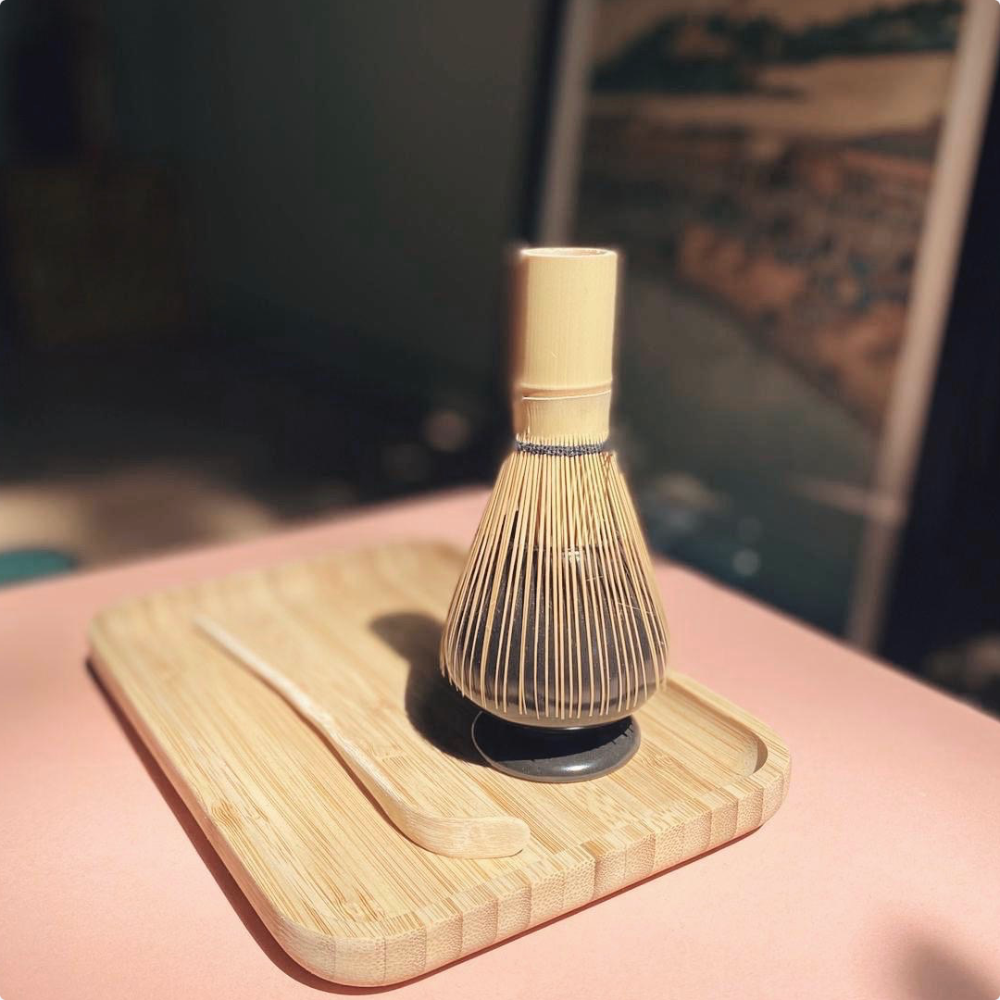
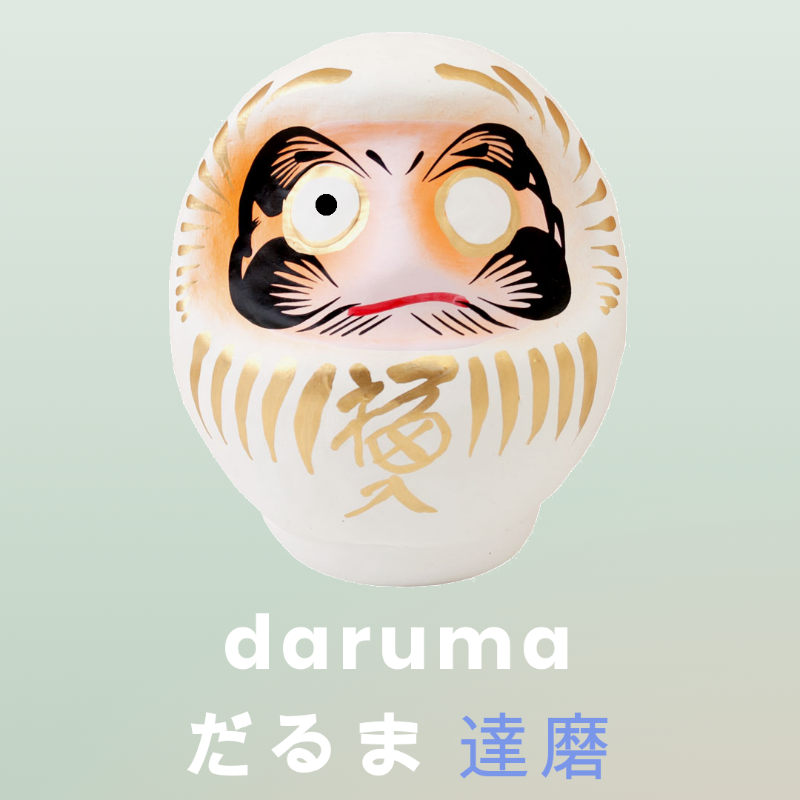
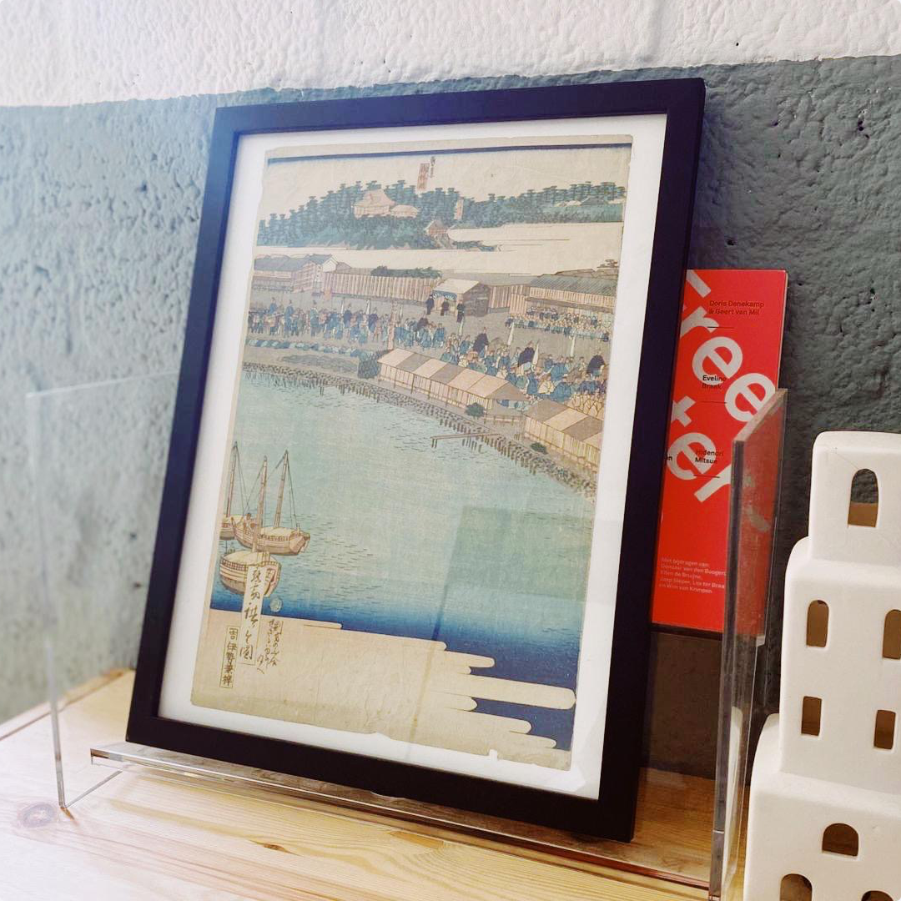
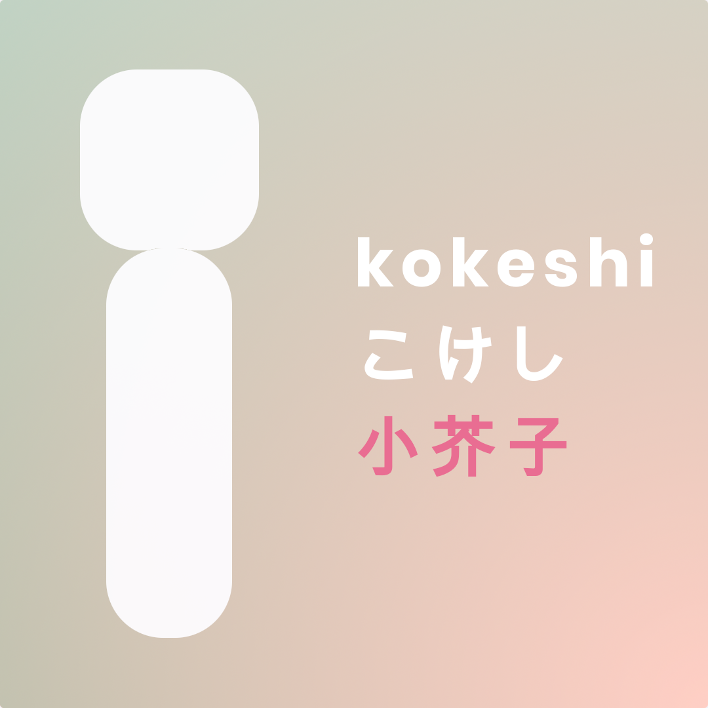

Mina-san, konnichiwa!
Sharing the love for Japan and its culture, rituals and craftsmanship. Follow me on Instagram! ありがとうございます
 nipponshoyu - the arts & crafts of Japan
nipponshoyu - the arts & crafts of Japan
Sharing the love for Japan and its culture, rituals and craftsmanship. Follow me on Instagram! ありがとうございます
Japanese woodblock printing (#浮世 絵 / #ukiyo-e) originates in the 17th century and although the prints are of great artistic quality, they were widely produced by professional printers who had a high degree of craftsmanship. The print above is an original one and was made around 1850 by Hiroshige "II". He produced many works in the style of Utagawa Hiroshige, his father-in-law.
"Daruma sees the world when your wish comes true. Make it so, and you'll see it too.” The daruma doll has its origin in Takasaki, Japan, and is a good luck charm in the image of Bodhidharma. The doll is made of paper mache and comes with two large empty eyes. It is a tradition to give one of the eyes a black pupil and make a wish at the same time. When the wish is fulfilled, you make the second pupil black. Daruma dolls come in multiple colors and each has its own symbolism. Mine is white and represents a harmonious life.
 Kokeshi dolls (こけし, 小芥子) are painted wooden dolls, hand made in the northeast of Japan. The history of these dolls began about two hundred years ago in Miyagi prefecture and, as the craft developed, spread throughout the region. Traditional kokeshi are always girls with their arms and feet only to be imagined under their painted clothes. On each kokeshi a specific family pattern can be found, handed down through generations. Although they are minimalist, it takes great skill to make them. That’s probably why only about 160 wood artisans are specialized in kokeshi nowadays.
